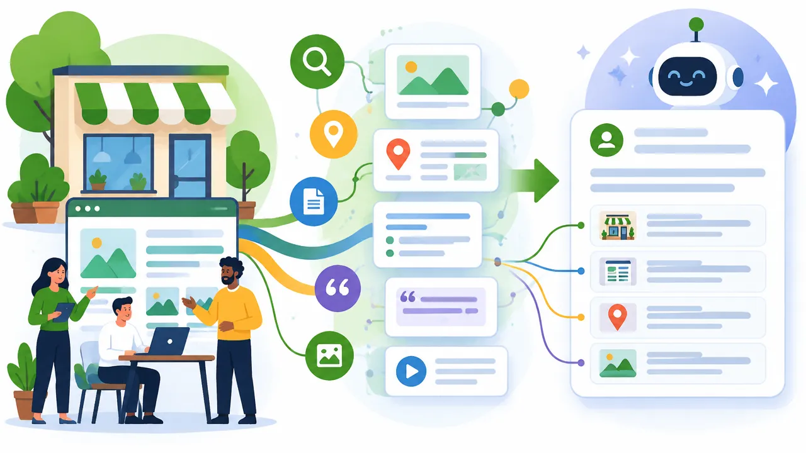
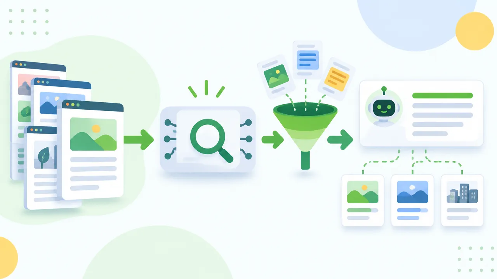
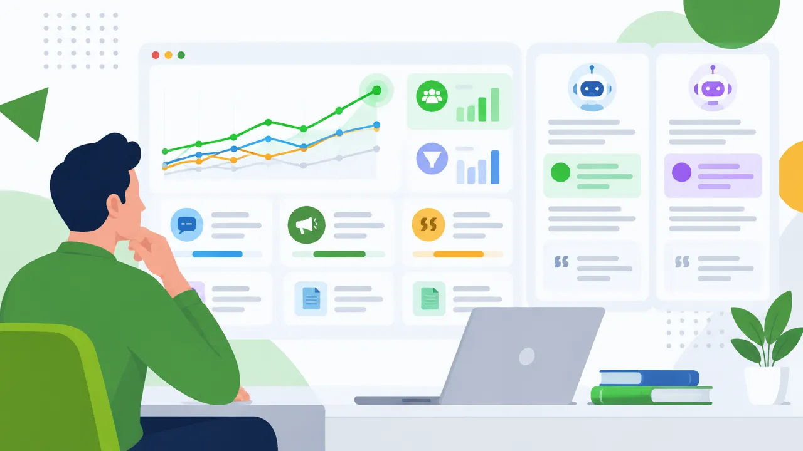

GEO, ou otimização para mecanismos de busca generativa, reúne práticas que ajudam os sistemas de inteligência artificial a localizar, compreender e citar informações sobre uma empresa. Para negócios que dependem de buscas orgânicas, isso pode ampliar a presença em respostas a perguntas, comparações e pedidos de recomendação. Na Assessoria Atlas, trabalhamos GEO em conjunto com SEO, conteúdo e presença local, sem prometer citações que nenhuma empresa pode controlar.
O essencial sobre GEO para empresas
- GEO busca aumentar a clareza, a confiabilidade e a possibilidade de citação das informações de uma marca em respostas geradas por IA.
- SEO continua importante: páginas precisam ser rastreáveis, indexáveis e úteis para pessoas e mecanismos de busca.
- Conteúdo específico, atualizado e apoiado por evidências tende a ser mais compreensível do que textos genéricos.
- Autoridade também depende da consistência entre o site, os dados empresariais e outras fontes confiáveis.
- Medir menções, citações, visitas e contatos ajuda a avaliar resultados sem reduzir GEO a uma única métrica.
O que é GEO e como funciona a busca generativa?
GEO é o conjunto de ações que facilita a inclusão de informações de uma marca nas respostas produzidas por mecanismos generativos. Em vez de apresentar apenas uma lista de páginas, uma ferramenta pode organizar dados de diferentes fontes e sintetizá-los em uma resposta para uma pergunta específica.
Isso não significa que a IA escolhe uma única página ou aplica uma regra universal. O sistema pode combinar recuperação de páginas, dados disponíveis, instruções do usuário e geração de texto. As fontes citadas e a resposta podem variar conforme a pergunta, o contexto e o produto utilizado.
Um estudo acadêmico de Aggarwal e outros pesquisadores avaliou técnicas para ampliar a visibilidade de conteúdos em mecanismos generativos. No ambiente experimental descrito, algumas técnicas elevaram a visibilidade em até 40%. Esse resultado não é uma promessa para empresas: depende do conjunto de testes e não garante uma posição ou citação em ferramentas comerciais. O estudo acadêmico sobre GEO ajuda a entender tanto as possibilidades quanto os limites da pesquisa.
Na prática, uma empresa precisa tornar suas informações fáceis de encontrar, interpretar e conferir. A pergunta estratégica deixa de ser apenas “qual termo queremos ranquear?” e passa a incluir “quais dúvidas atendemos e que evidências sustentam nossa resposta?”.

Como a IA encontra e escolhe informações sobre uma empresa?
Os sistemas generativos podem recuperar páginas, interpretar trechos e combinar informações para responder a uma consulta. Por isso, a visibilidade depende de vários fatores: a página estar acessível, responder claramente à dúvida, apresentar dados coerentes e oferecer sinais que permitam avaliar sua confiabilidade.
Não existe uma lista pública e completa de critérios idêntica para todas as ferramentas. Algumas respostas exibem fontes; outras podem resumir informações sem mostrar claramente de onde cada afirmação veio. A mesma marca também pode aparecer em uma pergunta e ficar ausente em outra, mesmo que os dois pedidos pareçam próximos.
Para a empresa, isso torna importante construir uma presença digital consistente. Uma página de serviço, por exemplo, pode explicar o que a empresa faz, para quem trabalha, em quais localidades atende, quais etapas segue e como entrar em contato. Se o site apresenta uma informação e outros canais apresentam outra, o sistema e o próprio cliente encontram sinais contraditórios.
O Google recomenda manter os fundamentos de busca aplicáveis às suas funcionalidades de IA. Sua documentação sobre recursos de IA reforça a importância de conteúdo útil e acessível, em vez de depender de uma fórmula especial para aparecer em respostas generativas.
Quer saber como sua empresa aparece hoje no Google e nas IAs? A Atlas faz um diagnóstico gratuito e mostra o que corrigir primeiro. Quero meu diagnóstico gratuito
GEO substitui SEO ou funciona junto com AEO?
GEO não substitui SEO. Ele amplia o foco para a presença em respostas sintetizadas, enquanto SEO continua ajudando páginas a serem descobertas, indexadas e apresentadas em resultados de busca. AEO, por sua vez, costuma se referir à otimização para mecanismos e formatos que respondem diretamente a perguntas.
| Abordagem | Foco principal | Exemplo de trabalho |
|---|---|---|
| SEO | Descoberta e desempenho de páginas nos mecanismos de busca | Melhorar conteúdo, estrutura, indexação e experiência técnica |
| AEO | Respostas claras para perguntas e consultas diretas | Organizar explicações objetivas e informações fáceis de extrair |
| GEO | Compreensão e possível citação da marca em respostas de IA | Reforçar contexto, evidências e consistência das informações |
Na execução, essas frentes se sobrepõem. Uma página útil para o visitante pode também responder bem a uma pergunta, e uma estrutura técnica correta pode facilitar sua descoberta por diferentes sistemas. Separar as disciplinas em projetos sem conexão pode gerar conteúdo duplicado, dados inconsistentes e esforço disperso.
Também não consideramos que a busca tradicional tenha deixado de importar. Pessoas continuam pesquisando produtos, serviços, endereços e avaliações em diferentes formatos. Por isso, uma estratégia sólida acompanha a evolução da busca sem abandonar os canais que já geram descoberta e contatos.
Que sinais tornam o conteúdo mais útil para respostas de IA?
Conteúdo específico e verificável é mais útil do que afirmações genéricas sobre qualidade ou liderança. Uma página deve explicar o serviço, o público atendido, o processo, as condições relevantes e os próximos passos em linguagem direta.
Ao planejar uma página, recomendamos cobrir a intenção completa da consulta. Uma empresa de manutenção predial, por exemplo, pode explicar quais tipos de edifício atende, quais problemas resolve, como funciona a vistoria e que informações o cliente precisa fornecer para receber uma proposta. Esse nível de detalhe esclarece a oferta para pessoas e sistemas.
- Defina a dúvida que a página responde e entregue uma resposta direta no início.
- Use exemplos, definições e critérios que correspondam à experiência real da empresa.
- Informe autoria, data de revisão e fontes quando esses elementos forem relevantes.
- Separe assuntos distintos em páginas próprias, ligadas por uma arquitetura compreensível.
- Revise promessas, números e descrições para remover afirmações sem comprovação.
Uma lista de verificação editorial para GEO pode ajudar a revisar autoridade, clareza, evidências, organização e atualização antes de publicar. Ela não deve virar um formulário mecânico: o objetivo é identificar lacunas que atrapalham a compreensão e a confiança, não adicionar perguntas artificiais a cada página.
Como preparar o site para ser compreendido por sistemas generativos?
Uma boa estratégia começa com páginas acessíveis e bem organizadas. Se mecanismos não conseguem localizar ou interpretar o conteúdo, ajustes de redação isolados dificilmente resolverão o problema.
Na auditoria técnica, avaliamos rastreamento, indexação, links internos, carregamento, compatibilidade com dispositivos móveis e organização das páginas. Também verificamos se cada serviço importante tem uma página própria, se títulos e descrições explicam o tema e se informações essenciais estão em texto legível, não apenas em imagens ou elementos que exigem interação.
Dados estruturados podem ajudar a descrever entidades e conteúdos quando são corretos e correspondem ao que o visitante vê. Eles não garantem destaque nem citação. Inserir marcação que não reflete a página, exagerar qualificações ou criar dados artificiais pode reduzir a confiança em vez de ampliá-la.
Informações institucionais também merecem atenção. Uma página sobre a empresa, canais de contato, responsáveis, localização e políticas relevantes ajuda a esclarecer quem está por trás do conteúdo. Quando houver vários autores, descreva experiência e responsabilidades com precisão, sem credenciais vagas ou impossíveis de confirmar.
Como demonstrar autoridade sem criar conteúdo genérico?
Autoridade cresce quando a empresa demonstra conhecimento real e o conecta a informações que o leitor pode verificar. Repetir palavras-chave ou publicar muitos textos superficiais não prova experiência, mesmo que aumente o volume do site.
Podemos transformar perguntas recebidas pelo atendimento, dúvidas de vendas e problemas recorrentes em páginas realmente úteis. Uma clínica, por exemplo, pode explicar como se preparar para uma consulta e o que esperar do atendimento, respeitando os limites profissionais e sem apresentar uma orientação geral como diagnóstico individual.
Quando a empresa possui dados próprios, casos documentados ou processos diferenciados, pode apresentá-los com contexto: como a informação foi obtida, a que período se refere e quais limitações existem. Se usar pesquisas externas, deve identificar a fonte e não atribuir a ela conclusões que o estudo não sustenta.
Atualizar significa verificar se a página ainda está correta, não apenas alterar a data de publicação. Recomendamos definir revisões para conteúdos sensíveis a mudanças, corrigir informações desatualizadas e registrar mudanças importantes. A frequência depende do assunto e do impacto de uma informação errada para o cliente.
Como GEO ajuda empresas locais a aparecerem em buscas com IA?
Negócios locais precisam deixar claros seus serviços, sua área de atendimento e seus dados de contato. Uma página local útil explica a relação entre a empresa e a cidade sem repetir nomes de bairros de forma artificial nem criar páginas quase idênticas para localidades que não atende.
O site deve conversar com o Perfil da Empresa no Google e com os demais canais oficiais. Horários, telefone, endereço, serviços e áreas atendidas precisam estar corretos. Avaliações autênticas podem ajudar consumidores a decidir, mas a empresa não deve fabricar depoimentos nem tratar comentários como prova automática de que uma recomendação aparecerá em respostas de IA.
Para uma empresa de Curitiba que atende também outras regiões, é importante distinguir endereço físico de área de cobertura. Conteúdos sobre serviços locais devem incluir informações concretas, como condições de atendimento e processo de contratação, em vez de trocar apenas o nome da cidade em um texto genérico.
Na Assessoria Atlas, integramos SEO local, conteúdo e otimização do site para ajudar empresas a fortalecer sua presença no Google, no Maps e nas experiências de busca com IA. O trabalho começa pela análise do negócio e do que os clientes realmente procuram, não por uma promessa de posicionamento garantido.
Como adaptar GEO ao porte e ao setor da empresa?
A aplicação muda conforme a empresa, o público, a complexidade do serviço e os recursos disponíveis. Uma pequena empresa pode priorizar páginas de serviço, informações locais e dúvidas de clientes. Uma organização maior pode precisar também de governança editorial, revisão entre departamentos e padronização de dados em muitos canais.
Imagine uma empresa de climatização. Para responder a uma busca por manutenção preventiva em Curitiba, uma página clara pode explicar quais equipamentos atende, como funciona a avaliação, que sinais indicam a necessidade de inspeção e quais regiões cobre. O exemplo é uma proposta de estrutura, não um caso real nem uma garantia de citação.
Uma empresa de software B2B pode precisar explicar integrações, requisitos técnicos e critérios de adoção. Um escritório profissional pode esclarecer escopo, etapas, limites do serviço e informações necessárias para uma consulta. Em setores regulados, a revisão de especialistas e a comunicação responsável são especialmente importantes.
Esses exemplos também ajudam a decidir onde investir primeiro. Antes de contratar ferramentas ou ampliar a produção, vale mapear as perguntas que influenciam a escolha do cliente e identificar quais respostas já existem, quais precisam de atualização e quais ainda não estão cobertas.
Como medir a presença da empresa em respostas de IA?
Medimos GEO combinando visibilidade, qualidade das menções e resultado de negócio. Uma citação pode ser relevante mesmo sem gerar uma visita imediata, mas o volume de menções sozinho não mostra se a estratégia atraiu clientes potenciais.
Uma auditoria inicial pode registrar consultas importantes, ferramenta testada, data, localização e tipo de resposta. Repetir esse processo em condições semelhantes ajuda a observar mudanças, embora a variação entre respostas impeça tratar uma checagem isolada como tendência definitiva.
- Registre se a empresa aparece, se há uma citação e se a informação apresentada está correta.
- Observe quais páginas ou fontes são usadas nas respostas quando essa informação está disponível.
- Acompanhe visitas de referência, buscas pelo nome da marca, formulários, chamadas e contatos comerciais.
- Separe resultados de busca tradicional, busca local e experiências generativas sempre que possível.
- Compare o período atual com uma linha de base, considerando mudanças de campanha e de demanda.
Para entender como medir a otimização generativa, é importante combinar verificações manuais com dados de análise do site e do atendimento. Nem toda ferramenta oferece relatórios equivalentes, e algumas menções podem não gerar uma visita identificável. Por isso, interpretamos os indicadores em conjunto e explicamos o que eles não conseguem provar.

Quais ferramentas, estudos e serviços podem apoiar GEO?
Ferramentas de GEO podem monitorar menções, comparar respostas, organizar consultas e analisar fontes citadas. Antes de escolher uma, verificamos quais sistemas ela cobre, como define uma menção, com que frequência coleta dados e se permite exportar resultados. Uma plataforma não substitui a revisão das respostas nem a análise das páginas do próprio site.
Quem está aprendendo o tema pode combinar documentação técnica, pesquisas acadêmicas, cursos, livros e comunidades profissionais. Como as interfaces e práticas mudam, vale verificar quando o material foi publicado e distinguir conceitos duradouros, como clareza e confiabilidade, de instruções ligadas a uma ferramenta específica.
O custo de contratar uma agência ou consultoria depende do escopo: diagnóstico técnico, pesquisa de demanda, produção ou revisão de conteúdo, SEO local, acompanhamento de métricas e nível de suporte. Antes de comparar propostas, recomendamos pedir entregáveis, responsabilidades, critérios de medição e limites explícitos. Desconfie de promessas de citação garantida.
Na Assessoria Atlas, oferecemos diagnóstico gratuito e planos personalizados para empresas de Curitiba e de todo o Brasil. A execução pode integrar SEO, GEO, conteúdo e Perfil da Empresa no Google, com relatórios mensais voltados a visibilidade, contatos e oportunidades de melhoria. Veja como funciona o nosso serviço de posicionamento no Google e nas IAs.
Como começar uma estratégia de GEO sem dispersar esforços?
Comece pelas dúvidas que mais influenciam a decisão do cliente e pelas páginas que já recebem tráfego ou geram contatos. Um plano em etapas ajuda a corrigir fundamentos antes de investir em grande volume de conteúdo ou em ferramentas especializadas.
- Mapeie a demanda: reúna perguntas de clientes, termos de busca, serviços prioritários e localidades atendidas.
- Revise a base técnica: encontre problemas de acesso, indexação, estrutura, desempenho e consistência dos dados empresariais.
- Melhore páginas prioritárias: responda às dúvidas com clareza, contexto, evidências e próximos passos úteis.
- Verifique fontes e reputação: alinhe informações institucionais e corrija dados divergentes nos canais da empresa.
- Acompanhe e ajuste: registre respostas, visitas e contatos, depois atualize o plano conforme os resultados observados.
Essa sequência pode ser aplicada por startups, negócios locais e empresas estabelecidas, mas a prioridade muda. Uma equipe pequena talvez precise consolidar poucas páginas essenciais. Uma marca com muitas unidades pode começar pela governança de dados e pela consistência entre localidades.
Para contratar apoio em Curitiba ou em outras regiões do Brasil, avalie se o profissional entende seu setor, explica como fará a medição e consegue integrar o trabalho aos objetivos comerciais. GEO deve ajudar o cliente a encontrar informações corretas e a empresa a receber oportunidades qualificadas, sem substituir uma estratégia de busca bem construída.
Perguntas frequentes
GEO substitui o SEO?
Não. O SEO faz suas páginas serem encontradas e indexadas. O GEO trabalha para que essas informações sejam entendidas e citadas pelas IAs. Uma coisa depende da outra.
Dá para garantir que minha empresa seja citada pelo ChatGPT?
Não. Ninguém controla as respostas das IAs, e elas mudam conforme a pergunta e a ferramenta. O que dá para fazer é aumentar as chances, com informações claras, consistentes e verificáveis.
Por onde começar o GEO numa empresa pequena?
Pelas páginas de serviço: diga o que você faz, para quem, onde atende e como contratar. Depois, deixe nome, endereço e telefone iguais no site e no Perfil da Empresa no Google, e responda às dúvidas reais dos clientes.
Como saber se o GEO está funcionando?
Teste as perguntas que seus clientes fazem nas IAs e registre se a empresa aparece, com data e ferramenta. Some a isso as visitas vindas dessas ferramentas e os contatos recebidos. Uma checagem isolada não basta.
GEO amplia a busca orgânica quando começa pelo cliente
GEO é uma evolução das práticas de presença digital, não uma fórmula isolada nem uma substituição automática do SEO. Empresas que publicam informações úteis, claras, acessíveis e consistentes criam melhores condições para serem compreendidas por pessoas e sistemas generativos.
O próximo passo é identificar as perguntas prioritárias, revisar as páginas que respondem a elas e estabelecer uma linha de base para acompanhar mudanças. Na Assessoria Atlas, ajudamos empresas a transformar esse diagnóstico em um plano de SEO e GEO conectado a visibilidade, contatos e crescimento sustentável.
Leia também
Quer que a Atlas cuide disso pra você? Fala comigo pra um diagnóstico gratuito.